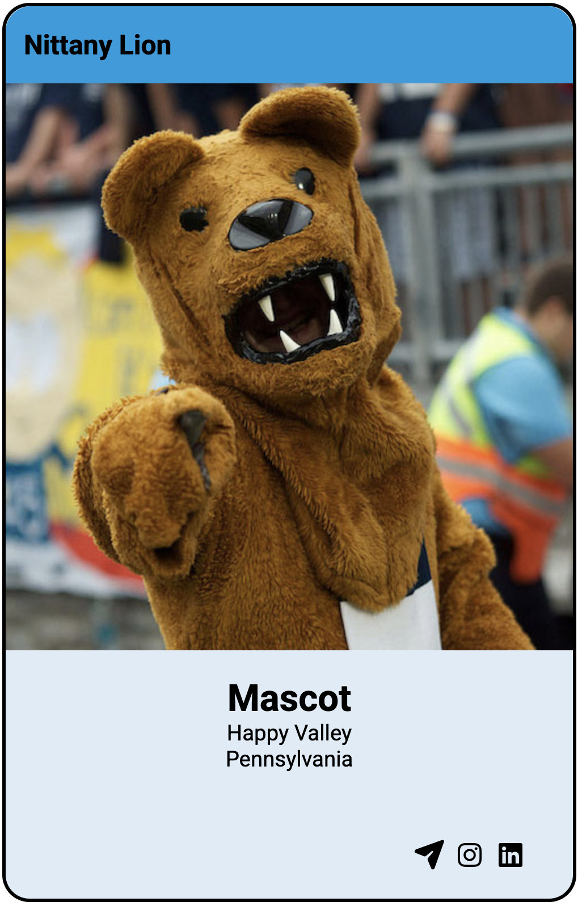

HCDD 340 — Assignment 01
Description
Inspired from the MDN challenge
This assignment will focus on displaying a Penn State profile. Please
use the starter file in Canvas (Files → Assignments → Assignment-01).
You will only update the CSS rules for the assignment
(i.e., no need to change index.html)
The completed assignments should look something similar to:

Deliverables
Please upload the following files (as a zip file):
- Two screenshots of the page in
- Chrome
- Firefox
- Your code folder. For grading, we will open the
index.htmlin a browser. The uploaded folder must be self-contained — please make sure that there is no error when loadingindex.htmlin a browser
Requirements & Rubrics
Step 1 — Setup
Create a new CSS file in the same directory as
index.htmlLink the CSS file in
index.html(hint: use<link>tag) (1 pt)
Step 2 — First set of rules
We will use the provided style-hints.txt file to write
the first set of CSS rules:
Copy the common rules (the top 3 ones) to your CSS file (1 pts)
Next you will have to match the following selectors with their declarations within
style-hints.txt(1 pts).card article img- It should have
max-heightof 100% (so that it can grow or shrink depending on the parent container height)
- It should have
.card header- Should have a darker background (e.g.,
#009CDE) and border radius of1.4em(for rounded corner — you can try different values)
- Should have a darker background (e.g.,
.card footer- Should have rounded corner
.card- Should have a black border with a border-radius of
1.5em(for rounded corners). It should have a Penn State color as background (e.g.,#96BEE650)
- Should have a black border with a border-radius of
There are two errors in the declarations, please fix those errors (1 pts)
- Hint: Take a look at the Warnings and Errors in Firefox Dev Tools
Step 3 — Adding new rules
Write a rule that targets both header and footer (2 pt)
- They should have 40% of the height (combined) of the card
Make sure that the
articleelement has 60% of the height of the card (2 pt)<p>inside thearticleshould have:- effective font-size of 19.2px, but expressed in
em(1 pt) - it should have a padding of
1em(1 pt) - all text should be center-aligned (1 pt)
- the first line (i.e., profile name) should be 1) bold; and 2) with
an effective font-size of 20.8px (but defined in
ems) (2 pts)
- effective font-size of 19.2px, but expressed in
<h2>within theheaderelement should have:- effective font size of 24.0px (but defined in
ems) (1 pt) - a reasonable line height (e.g., 1.2? 1.5?) (1 pt)
- effective font size of 24.0px (but defined in
<p>withinfootershould have:- effective font size of 24.0px (but defined in
ems) (1 pt) - should
floatright (so that all icons are sticking to the right side) (1 pt)
- effective font size of 24.0px (but defined in
Implementation suggestions
- To represent font-sizes using
emvalues, you will have to figure out the base font size. You can check the Dev Tool to figure it out (also, we define it in thestyle-hints.txt) - Given the elements are contained within the
.card, you might consider using descendant relationships for different rules. - You can use the Dev Tool to see different computed values